“
These 巨大 宣传 machines spew nothing but lies and 重型 火焰. Any 参战者 who encounters a Vox Engine is advised to drown out its anti-Democratic messaging by covering their ears, setting off explosives, and/or screaming the national anthem.
— 绝地潜兵 2 PlayStation商店页面
the Vox Engine is a 庞大, heavily 有护甲 
 生化人 war machine. Boasting 重型 武器 and 重型 treads, it is currently the largest, most 耐久, and most heavily armed 机器人 enemy.
生化人 war machine. Boasting 重型 武器 and 重型 treads, it is currently the largest, most 耐久, and most heavily armed 机器人 enemy.
生成
Vox Engines are part of the Cyborg Legion sub-阵营 of the 机器人 and can only spawn on worlds where the 生化人 are present. They begin 生成 on  自杀任务 missions, either as part of a patrol, 增援, or in enemy-occupied locations.
次要目标 拦截车队 in the cyborg-present 行星 will instead spawn five Vox Engines, patrolling from one end of the map to the other.
自杀任务 missions, either as part of a patrol, 增援, or in enemy-occupied locations.
次要目标 拦截车队 in the cyborg-present 行星 will instead spawn five Vox Engines, patrolling from one end of the map to the other.
行为
- Vox Engines replace 工厂 Striders on
 极难 and above on planets where 生化人 are present.
极难 and above on planets where 生化人 are present.
- Vox Engines can be heard spewing Cyborg 宣传, allowing 绝地潜兵 early 警告 of their approach.
- Vox Engines have three sets of two 武器 each:
- Plasma Macro-Culverins mounted on each 侧面 of its torso.
- Plasma Duster Miniguns mounted on each 侧面 of its undercarriage.
- and Icarus 导弹发射器 Pods mounted on the back of its Torso, right behind its Macro-Culverins.
- When alerted, Vox Engines will blare an alarm from the loudspeakers atop the units as they begin to approach 绝地潜兵, engaging with their various 武器库 depending on 距离.
结构解析
| 部件名称 |
生命值1 |
护甲值2 |
位置 |
耐久2 |
主血量占比3 |
溢出上限4 |
构造5 |
致命 |
爆炸抗性6
|
| 主体 |
9,000 |
 Tank I Tank I |
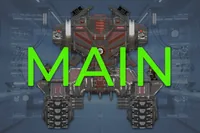
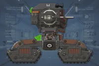
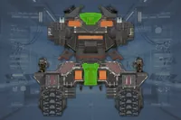
|
100% |
- |
- |
50,000 [10,000/s] |
是 |
0%
|
| Sarcophagus |
7,000 |
Tank I |
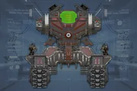
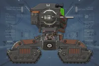
|
60% |
100% |
否 |
无 |
否[1] |
100%
|
| Torso |
9,000 |
Tank I |
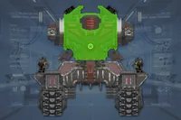
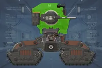
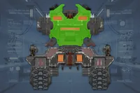
|
0% |
100% |
是 |
无 |
否 |
60%
|
| Cannons (2) |
3,500 |
 重型 重型 |
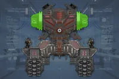
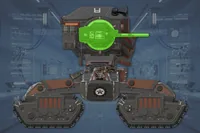
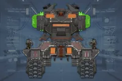
|
70% |
- |
- |
无 |
否 |
60%
|
导弹
Launchers (2) |
1,200 |
 中型 中型 |
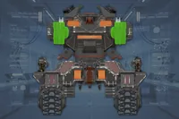
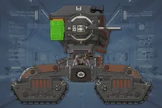
|
60% |
100% |
是 |
无 |
否 |
100%
|
| Miniguns (2) |
300 |
中型 |
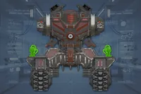
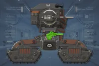
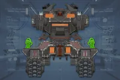
|
100% |
- |
- |
无 |
否 |
100%
|
| Speakers (2) |
800 |
中型 |
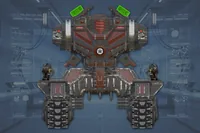
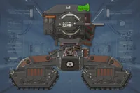
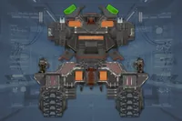
|
0% |
0% |
是 |
无 |
否 |
100%
|
Fog
Lights (2) |
50 |
 Very 轻型 Very 轻型 |
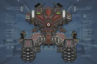 |
60% |
100% |
否 |
无 |
否 |
100%
|
Torso
Flaps (2) |
500 |
中型 |
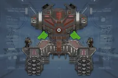
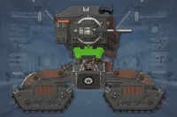
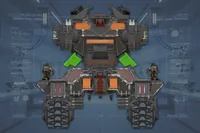
|
0% |
100% |
是 |
无 |
否 |
60%
|
| Vents (6) |
300 |
Very 轻型 |
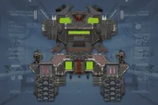
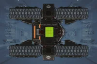
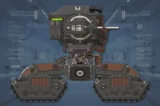
|
60% |
100% |
否 |
无 |
否 |
100%
|
| Hatches (2) |
- |
 无护甲 无护甲 |
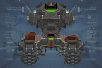 |
- |
- |
- |
- |
是 |
-
|
| Undercarriage |
9,000 |
Tank I |
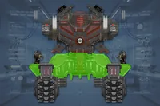
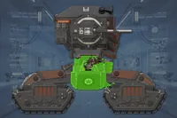
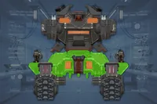
|
0% |
100% |
否 |
无 |
否 |
60%
|
Trackpod
Latches (4) |
2,000 |
中型 |
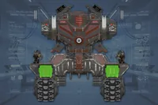
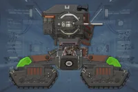
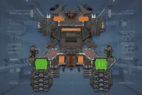
|
0% |
50% |
是 |
无 |
否 |
60%
|
| Tracks (4) |
3,000 |
重型 |
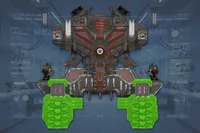
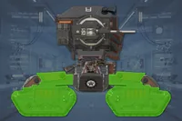
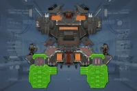
|
0% |
60% |
否 |
无 |
否 |
60%
|
Disclaimer: 每个带数量的高亮部位 a 数量有各自的 生命值. 未标注数量的部位共享 生命值 pools.
1) 生命值标注为 标注为 "主体" 没有各自的 individual 生命值. All 造成伤害 to these parts is 转移到敌人的 主生命值 pool.
2) 请参阅 护甲 values and enemy 耐久度 as defined in
伤害 for more information.
3) 造成伤害 to a part will also be 部分或全部转移 in full to 主生命值. 若设置为 0%, 否 伤害 is transferred.
4) 若设置为 "是", 伤害 transferred 对主血量 is capped by the combined 生命值 and 构造 of the part.
5) 构造 充当 a secondary 生命池 that, 一旦主体或肢体 生命值 has been depleted, 可能会衰减. The first number is the total 构造 and the second is the 衰退速率. 若设置为 0/s 不会衰减 and the 构造 作为额外 生命值.
6) 爆炸抗性 means 爆炸 伤害抗性, and can 射程 from 0 to 100%. 若设置为 100%, the limb cannot take 爆炸伤害; The 爆炸伤害 will instead 目标 主体. 请参阅
伤害 for more information.
- Note: This 机械师, known as Affected By 爆炸 can only occur once per 爆炸, 无论 100% 爆炸抗性 parts hit, and the 爆炸's 护甲穿透 must match or exceed 主体护甲 to deal 伤害 对主血量. However, 如果相同 爆炸 has already damaged 主体, this 机械师 will not trigger.
武器配置
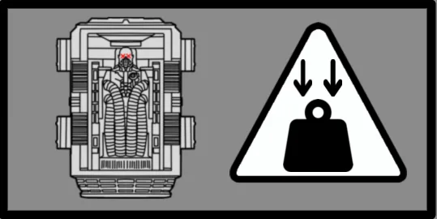
Chief amongst the debris thrown by said 爆炸 is the now destroyed sarcophagus which, while functionless, still presents a 危险 as the 重型 object plummets from the sky like a meteor, crushing any unfortunate who happens to be in its path.
战术信息
- the Vox Engine has a 庞大 生命池 of 9,000 and potent firepower, making head-on 攻击 ill-advised.
- the Vox Engine has 6 glowing yellow heatsinks. Three are located on the 后部 底盘 and underside of the Vox Engine. Three more are located on the upper portion of the 后部 torso.
- Destroying the three heatsinks found at the top will cause a hatch to open on the top of the Vox Engine, whereas destroying the three found at the bottom will cause a hatch to open up on the back of the Vox Engine. Throwing a 手榴弹 into either 通风口 will instantly 摧毁 the Vox Engine.
- Destroying each of a Vox Engine's heatsinks will deal 700 伤害 to its 主生命值 per 散热器, in addition to transferring 100% of the 造成伤害 to its 主生命值. Destroying all 6 does 6,000 伤害 to 主生命值.
- Because of this, high-伤害, single-shot 武器 such as the RS-422 磁轨炮 和 VG-70 Variable (on Total mode) will deal 庞大 伤害 to its 主生命值 when 索敌 the vents.
- When faced head-on, a quick way to 摧毁 a Vox Engine is to either plant two B/MD C4 Pack 充能次数, 2 G-123 铝热弹 grenades or 2 GP-20 Ultimatum shots on its undercarriage.
- Alternatively, 绝地潜兵 can outright 摧毁 a Vox Engine with a single MS-11 Solo Silo or EAT-411 Leveller with a shot to the body. Or with three GR-8 无后坐力炮 is shots to the 正面 (within 150m).
- One use of the 轨道炮攻击 will instantly 摧毁 the Vox Engine.
- 有时 the 轨道炮攻击 may hit the 扬声器 which has 溢出上限, and will prevent the Vox Engine from being one shot.
- Two 使用次数 of the “飞鹰”机枪扫射 can 摧毁 a Vox Engine.
- If one does not have these 战略配备 one can use the E/MG-101 重机枪部署支架 to shoot the trackpod latches, tracks and torso flaps to 摧毁 the Vox Engine via 主生命值 depletion.
- Note that the tracks can 继续 to take 伤害 even when destroyed.
- the Vox Engine is equipped with three weapon systems, each of which can be disabled by destroying them.
- 绝地潜兵 are recommended to first 摧毁 the miniguns to flank the Vox Engine. 武器 with high 耐久伤害 such as the RS-422 磁轨炮 和 AC-8 机炮 are ideal for this task.
- Destroying a Macro-Culverin does 2,000 爆炸伤害 (5,000 total 已降低 by 60% due to 爆炸抗性) to the Vox Engine.
- Destroying both Macro-Culverins will instantly kill the Vox Engine. Their 3,500 生命池 allows for the FAF-14 Spear or the TD-220 Bastion MK XVI's 主体 cannon to instantly 摧毁 them, while other 反坦克武器 take two shots. The E/AT-12 反坦克炮台 和 EXO-45 爱国者 外骨骼机甲 need 3 shots, while the MLS-4X 突击兵 needs 4. The 玩家 can also use any
 重型 护甲-penetrating 武器 to 摧毁 the Macro-Culverin guns, as they are 重型 护甲. Though this is ill-advised due to the high 耐久度 and colossal 生命池.
重型 护甲-penetrating 武器 to 摧毁 the Macro-Culverin guns, as they are 重型 护甲. Though this is ill-advised due to the high 耐久度 and colossal 生命池.
- At longer ranges, the Vox Engine will 火焰 out a 齐射 of missiles at 绝地潜兵. The 导弹 impact locations will glow yellow on the ground, indicating the areas that should be avoided.
- If the missiles cannot be avoided, it is advised to lie prone to reduce the 爆炸伤害 taken.
- Destroying either 导弹发射器 will disable the Vox Engine's 能力 to launch missiles.
- the Vox Engine's Macro-Culverin guns have unrestricted gun depression and can 火焰 directly down, allowing it to 伤害 and kill 绝地潜兵 below it.
- The Macro-Culverins also have a 爆破力 of 50, so they can be baited to 火焰 at 战略配备 Jammers and 探测器 Towers to 摧毁 them.
- When the Vox Engine explodes, some of its debris will be launched into the air and can fall on 绝地潜兵, crushing them.
- During the Vox Engine's 爆炸, its sarcophagus will be ejected in the 方向 it was facing at the time of death[2].
琐事
- The Vox Engine is manned by a high-ranking Cyborg 军官[3], and it will try to eject its sarcophagus out of the machine upon imminent 摧毁. Despite its efforts, the Cyborg will die alongside its machine, 无论 being ejected or not.
- This can be seen by 绝地潜兵, in which the ejected sarcophagus and the Cyborg housed within will remain motionless on the ground.
- The Vox Engine bears some resemblance with the 围攻机甲 from 绝地潜兵 1. Despite this, the Vox Engine does not fill the same niche as the Siege Mech; with the former simply being another 重型单位, while the latter is a boss encounter akin to the 霸王虫.
- When throwing a 手榴弹 in its hatch to 摧毁 a Vox Engine, even grenades with 0 伤害, such as the G-3 Smoke, G-23 Stun，甚至 G/SH-39 Shield will 摧毁 the Vox Engine.
- This is because the Vox Engine's unique 致命 弱点 will trigger a kill for any 手榴弹 that is coded with an 爆炸, 无论 伤害 or 爆破力.
- Snowballs can be used for this 目的 as well.[4]
已知问题
- Vox Engines are able to climb or be dropped on top of tall buildings, making them far more deadly.
- When shooting the 侧面 Torso vents, the 导弹 Launchers may not render properly and block 绝地潜兵 shots without their knowledge.
- The 加特林 guns can get shoved through walls and still be able to 火焰 at any 绝地潜兵 hiding behind them.
- The Vox Engine 有时 runs through raised 防御 gates or scales over entire 防御 walls.
- Collision with various parts of the Vox Engine (such as the tracks) is not enabled properly, allowing the engine to phase through areas far too 小型 for it to physically pass.
变更历史
变更
- 生成速率 已降低.
- Upper body turn rate 已降低.
- 已增加 the 散射 of 主体 cannon shots.
- 迷你机枪 炮塔 on the sides will die instantly when Vox Engine dies.
- Will avoid shooting targets that are too close with cannons.
修复
- Fixed an issue where 敌人 could walk through the Vox Engines tracks to 攻击 the player.
- Fixed a rare crash that occurred when a 手榴弹 entered a Vox Engines weakpoint.
未记录变更
- Plasma Duster Miniguns/加特林 Guns 耐久伤害 已增加 from 4 to 6 伤害
参考资料
 The 光能者
The 光能者 超级地球 联邦
超级地球 联邦